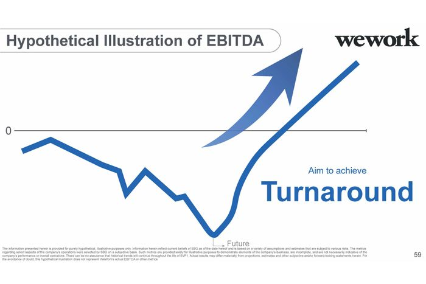

Data visualization#
Data visualization and design play important roles in finance. We are often looking at time series data, such as plots of stock returns. We are comparing different firms at the same point in time using cross-sectional data. We also follow a set of firms through time using panel data.
Some data work is exploratory, where you want to see what you have, look for outliers, mistakes, etc. Other graphics will make it into a final presentation or client report. Python can do all of this.
This section follows Chapter 7 of Python for Finance, 2e and discusses using matplotlib to create graphics in Python.
However, there are many, more modern plotting libraries available for Python, such as plotly, seaborn, bokeh, and altair. Some of these, like plotly and bokeh, let you build interactive graphics. We’ll look a little bit at plotly and seaborn.
We’ll focus on financial data and the basic building blocks of creating plots, but just be aware that these packages can do a lot more.
The Intro to Data Visualisation for Coding for Economists covers some basic design principles. His section Narrative Data Visualisation expands on these ideas. He discusses the “anatomy” of figures and how to choose the best plot for your data.
Another concise guide. Note the use of seaborn.
If you really want to make nice charts and graphs, read those guides. Like with our data work, sketch what you want to show. Why are you making certain choices? Be deliberate.

Fig. 39 Our goal: Make figures that are more informative than this. Source: https://nymag.com/intelligencer/2019/11/softbanks-insane-presentation-on-how-it-will-fix-wework.html.#
Choosing the right visualization#
Before you start coding, ask yourself: What question am I trying to answer? The type of question determines the best plot. Here’s a quick guide:
Your Question |
Data Type |
Best Plot |
Why |
|---|---|---|---|
What’s the distribution? |
Single continuous variable |
Histogram, KDE |
Shows shape, center, spread |
How does it change over time? |
Time series |
Line plot |
Shows trends, patterns |
What’s the relationship? |
Two continuous variables |
Scatter plot |
Shows correlation, clusters |
How do groups compare? |
Categorical + continuous |
Bar chart, box plot |
Shows differences across groups |
What correlates with what? |
Many variables |
Heatmap |
Shows all pairwise relationships at once |
What’s the trading activity? |
OHLC price data |
Candlestick |
Shows open, high, low, close for each period |
When working with Claude or Copilot, you can describe what you want to show and ask for the appropriate plot type. For example: “I have daily returns for five stocks and want to see which ones move together. What visualization should I use?” The answer would be a correlation heatmap.
Common visualization mistakes#
Even with AI help, you can still make poor design choices. Watch out for these:
Overcrowding: Too many lines on one plot makes it unreadable. If you have more than 4-5 series, consider small multiples (separate panels) or let users select what to show.
Missing labels: Always label your axes and include units. “Returns” is better than nothing, but “Daily Returns (%)” is best.
Wrong scale: Stock prices over decades look better on a log scale. Returns are usually fine on a linear scale.
Pie chart overuse: Pie charts work for 2-4 categories. Beyond that, use a bar chart instead.
Poor color choices: Make sure colors are distinguishable. Red and green together are problematic for colorblind viewers — try blue and orange instead.
Chart junk: Avoid 3D effects, excessive gridlines, and decorative elements that don’t convey information.
Static vs. interactive#
You’ll learn two main approaches: static graphics with matplotlib and interactive graphics with plotly. When should you use each?
Use matplotlib (static) when:
Creating figures for papers, reports, or printed presentations
You need precise control over every visual element
The output will be a PNG, PDF, or slide image
You want the exact same figure every time
Use plotly (interactive) when:
Exploring data yourself — hover to see values, zoom in on regions
Building dashboards or web applications
Presenting to an audience who wants to explore the data
Showing time series where viewers might want to focus on specific periods
In practice, you’ll often start with interactive plots for exploration, then create polished static versions for your final report.